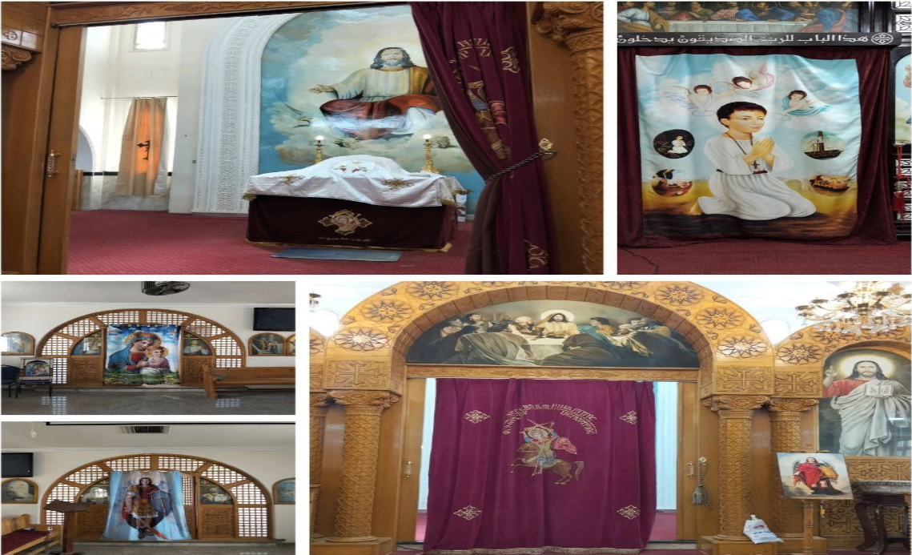

معلومات عن كنيستنا المحبوبة

الموقع الجغرافي
تقع كنيسة أبي سيفين مرقريوس في حي سفاجا البلد بمدينة سفاجا محافظة البحر الأحمر.
تاريخ الكنيسة
1991م
تأسيس الكنيسة الأولى
2005م
بناء كنيسة القديس أبانوب
2009م
تدشين كنيسة القديس أبانوب
الكنيسة الأولى - بنيت عام 1991م
يوجد في كنيستنا الأولى التي بُنيت عام 1991م مذبح للشهيد فيلوباتير مرقوريوس أبي سيفين، كما يوجد بها رفات القديس بطرس والشهيد أبي سيفين.
كنيسة القديس أبانوب النهيسي - بنيت عام 2005م
يوجد أيضاً في كنيستنا كنيسة صغيرة للقديس والشهيد أبانوب النهيسي والتي بُنيت عام 2005م وتدشنت عام 2009م وبها مذبح للشهيد أبانوب.
المذابح المقدسة
مذبح الشهيد فيلوباتير مرقوريوس أبي سيفين
مذبح الشهيد أبانوب النهيسي
مذبح الملاك ميخائيل
مذبح السيدة القديسة الطاهرة العذراء مريم
أهمية الكنيسة
تُعد كنيستنا المحبوبة هي الكنيسة الوحيدة في مدينة سفاجا حتى الآن، مما يجعلها مركزاً روحياً مهماً لجميع الأقباط في المنطقة.